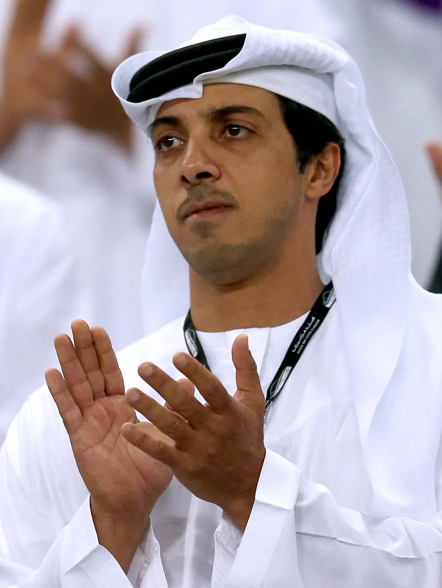
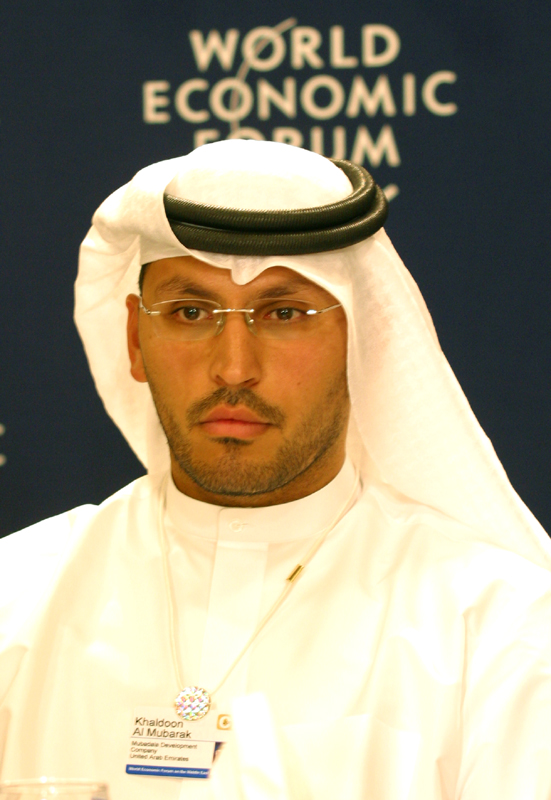

City Football Group
Mansour bin Zayed Al-Nahayan
Khaldoon Al Mubarak
Creado en la temporada 2013-14 para gestionar los intereses futbolísticas globales de Abu Dhabi United Group, el City Football Group (CFG) es una corporación paraguas que posee participaciones en una red de clubes globales con el propósito de compartir recursos, redes de academia y marketing. A través del City Football Group, El Manchester City posee participaciones en una serie de clubes:
- Melbourne City Football Club (2014-presente): El 23 de enero de 2014 se anunció que el Manchester City se había asociado con el equipo de la liga de rugby australiana Melbourne Storm para hacerse cargo del equipo Melbourne Heart FC que juega en la A-League. El 5 de agosto de 2015 adquirió la propiedad total del equipo.
- Yokohama Marinos (2014-presente): El 20 de mayo de 2014 se anunció que el Manchester City se había asociado con la empresa automotriz japonesa Nissan para convertirse en un accionista minoritario del Yokohama Marinos de la J1 League.
- Bandera de Estados Unidos New York City FC (2015-presente): El 21 de mayo de 2013 se anunció que el Manchester City se había asociado con el equipo de béisbol americano New York Yankees para crear un equipo de fútbol que jugara en la Major League Soccer. El equipo empezó a jugar en la temporada 2015.
- Bandera de Uruguay Montevideo City Torque (2017-presente): El 5 de abril de 2017, se anunció que había adquirido el Club Atlético Torque, un club de Uruguay que posteriormente fue renombrado a Montevideo City Torque. Actualmente está jugando en la Primera División.
- Girona Fútbol Club (2017-presente): El 23 de agosto de 2017 se anunció que había adquirido el 44,3 % del equipo de fútbol Girona. Otro 44,3 % está a cargo del Girona Football Group, liderado por Pere Guardiola, hermano del entrenador, Pep Guardiola.
- Sichuan Jiuniu F.C. (2019-presente): El 20 de febrero de 2019, se anunció que el City Football Group, así como UBTECH y China Sports Capital habían adquirido Sichuan Jiuniu F.C.
- Mumbai City FC (2019-presente): El 28 de noviembre de 2019 se anunció que se convertía en accionista mayoritario de Mumbai City FC después de adquirir el 65 % del club. Mumbai City FC es un club de fútbol con sede en Mumbai, que compite en la Superliga de India.
- Bandera de Bélgica Lommel S.K. (2020-presente): El 11 de mayo de 2020 se anunció que el City Football Group había adquirido la mayoría de las acciones del club Lommel S.K. club belga que compite en la Segunda División de Bélgica.
- Troyes AC (2020-presente): El 3 de septiembre de 2020 se anunció que habían comprado las acciones del Troyes AC al antiguo propietario del club Daniel Masoni convirtiéndose en los accionistas mayoritarios del club. El equipo compite en la Ligue 1.
- Palermo F. C. (2022-presente): El 4 de julio de 2022 se anunció que el City Football Group habían adquirido una participación mayoritaria del 80% del club italiano Palermo F. C. que milita en la Serie B.